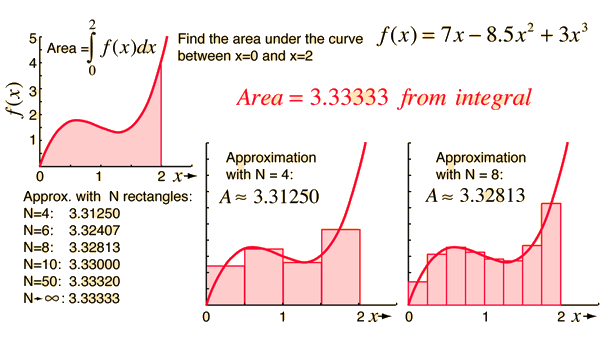
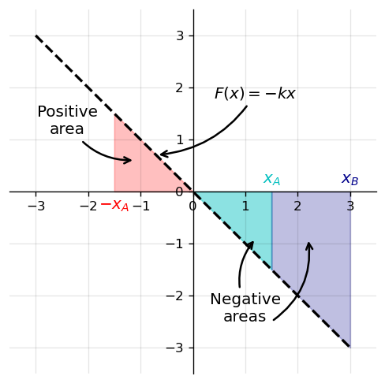
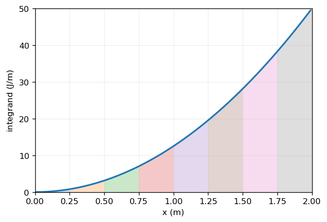

7. Work and Kinetic Energy#
Jul 14, 2026 | 7355 words | 37 min read
Chapter roadmap
This chapter connects forces, displacement, and changes in motion using the ideas of work and kinetic energy. Work measures the part of a force that transfers energy along a displacement, and kinetic energy measures the energy associated with an object’s speed.
As you read, focus on three questions:
Which forces do work on the object?
Is the work done by each force positive, negative, or zero?
How does the net work change the object’s kinetic energy?
These ideas will be used to analyze motion with friction, springs, curved paths, and power.
7.1. Work#
In physics, work isn’t just about what makes you tired or fatigued. It has a special definition, which is when energy is transferred to an object due to the work done on it. Work is done when a force acts on something that undergoes a displacement from one position to another.
Forces can vary as a function of position, and displacements can be along various paths between two points. We define the increment of work \(dW\) done by a force \(\vec{F}\) acting through an infinitesimal displacement \(d\vec{r}\) as the dot product of these two vectors:
We can find the total work done by adding up the contributions for infinitesimal displacements (along a path between two positions). This uses the same dot product idea introduced in Chapter 2.
Work Done by a Force
The work done by a force is the integral of the force with respect to the displacement along the path of the displacement:
The path or line integral adds up contributions along a path. Often the path is parameterized by time so there are time dependent functions \(x(t)\) and \(y(t)\) that are separable. In short, we add up all the components of the force that are parallel to the direction of the path (as shown in Fig. 7.1)
Fig. 7.1 The work done by a force depends on the component of the force along the path followed by the object. Image Credit: OpenStax: Work.#
Although we expressed the dot product using the product of magnitudes and the cosine of the angle between them. If it is convenient, one could use the form of the dot product that includes the vector components.
Note
Recall that the vector components of force are portions of a force along a given direction. The components can be positive, negative, or zero, depending on whether the force is directed along the path or perpendicular to it. The maximum work is done either parallel (\(\cos{0}=1\)) or antiparallel (\(\cos{\pi} = -1\)), while zero work is done when the force is perpendicular to the displacement (\(\cos{\theta}=0\)).
The units of work are force multiplied by units of length, which in the SI system is \(\rm N\cdot m\). This combination is called a joule and is abbreviated as \(\rm J\). In the English system (used in the US), the unit of work is the foot-pound (\(\rm ft\cdot lb\)) because the unit of force is the pound (\(\rm lb\)) and the displacement is the foot (\(\rm ft\)).
7.1.1. Work Done by Constant Forces and Contact Forces#
The simplest work to evaluate is that done by a constant magnitude force in a non-varying (single) direction. In this case, the work is only determined by the distance traveled.
Work is an integral. Consider a rectangle of height \(h\) and a length \(\ell\). If the length is divided into many (\(n\)) small chunks of length \(\Delta \ell_n\). You can visualize that the area of the rectangle can be calculated by summing up all smaller areas, i.e., \(A = \sum_n h\times \Delta \ell_n = h\times \ell.\)
Fig. 7.2 Examples of work done by constant forces. A person pushing a lawn mower does work through the component of the force parallel to the displacement, while the person holding or carrying a briefcase does no work on the briefcase in the cases shown. Image Credit: OpenStax: Work.#
Figure 7.2 shows two people exerting a constant force.
In Fig. 7.2a, the man exerts a constant force \(\vec{F}\) along the handle of a lawn mower, where the horizontal displacement is \(\vec{d}\). Thus, the work done on the lawn mower is \(W = \vec{F}\cdot \vec{d} = Fd\cos{\theta}\), where \(\theta\) is the angle relative to the horizontal.
Figs. 7.2b and 7.2c show a woman holding a briefcase. The woman must exert an upward force to balance the weight of the briefcase. In both cases the work done is zero because either in (b) displacement is zero or in (c) the force is perpendicular to the displacement.
When you mow the grass, other forces act on the lawn mower (i.e., contact force of the ground and gravitational force). For an object moving on a surface, the displacement \(d\vec{r}\) is tangent (or parallel) to the surface. The normal force \(\vec{N}\) is perpendicular (or normal) to the surface (i.e., \(\theta = 90^\circ\)). As a result, we have
The normal force never does work under these circumstances. The part of the contact force on the object that is parallel to the surface is friction \(\vec{f}.\) For an object sliding along the surface, the kinetic friction \(\vec{f}_k\) is opposite to \(d\vec{r}\) so the work done by kinetic friction is negative. We can write this as an integral by
where \(|\ell_{AB}|\) is the path length on the surface.
Checkpoint
A box slides horizontally while gravity acts vertically downward. Does gravity do work on the box during the horizontal motion? Explain using the angle between force and displacement.
The force of static friction does no work in the reference frame of the surface because the point of contact does not slip across the surface.
As an external force, static friction can do work. Static friction can perform
positive work to prevent someone from sliding off a sled when the sled is moving.
negative work (via air resistance) to balance the positive work (via road on the drive wheels) for a car moving down a flat highway.
You need to analyze each particular case to determine the work done by the forces, whether positive, negative, or zero.
The gravitational force (or weight) of the lawn mower has a constant magnitude \(mg\) and direction, vertically down. The work done by gravity on the mower is the dot product of its weight and its displacement. It is convenient to express the \(x\)-axis along the horizontal and the \(y\)-axis vertically up. Then the gravitational force is \(-mg\hat{j}\), so the work done by gravity \(W_g\) over any path \(A\) to \(B\) is
The work done on an object by gravity depends only on the object’s weight (\(mg\)) and the difference in height \(h = y_B - y_A\) the object is displaced.
Gravity does negative work that moves upward (i.e., \(y_B > y_A\)), which means you must do positive work (against gravity) to lift an object upward.
Alternatively, gravity does positive work on an object that moves downward (\(y_B< y_A\)), which means that you do negative work against gravity to control the descent of the object so it doesn’t drop to the ground.
7.1.1.1. Example Problem: Work to Push a Lawn Mower#
Exercise 7.1
The Problem
How much work is done on the lawn mower by the person in Figure 7.2 (a) if he exerts a constant force of \(75\ {\rm N}\) at an angle \(35^\circ\) below the horizontal and pushes the mower \(25\ {\rm m}\) on level ground?
Show worked solution
The Model
The lawn mower moves on level ground, so its displacement is horizontal. The applied force has constant magnitude and direction, and the angle between the applied force and the displacement is \(35^\circ\). The vertical component of the applied force does not contribute to the work because the mower does not move vertically. The work is determined by the component of the applied force parallel to the displacement.
The Math
For a constant force acting over a straight displacement, the work done by the force is the dot product of the force and displacement.
The work done on the lawn mower follows by evaluating the dot product using the force magnitude, displacement, and angle between them.
The Conclusion
The work done on the lawn mower by the applied force is \(\boxed{1500\ {\rm J}}\). This result is positive because the applied force has a component in the same direction as the mower’s displacement. The calculation uses the dot product introduced earlier, which is why only the force component parallel to the displacement transfers energy to the mower.
The Verification
The numerical check recomputes the dot product using the same force, displacement, and angle used in the analytical solution. The rounded output matches the reported work.
import numpy as np
F = 75.0 # applied force magnitude (N)
d = 25.0 # horizontal displacement (m)
theta = np.deg2rad(35.0) # angle between force and displacement (rad)
W = F * d * np.cos(theta) # work done by the applied force (J)
W_round = np.round(W, -2) # work rounded to the hundreds place (J)
print("The work done on the lawn mower is %d J." % W_round)
7.1.1.2. Example Problem: Moving a Couch#
Exercise 7.2
The Problem
You decide to move your couch to a new position on your horizontal living room floor. The normal force on the couch is \(1\ {\rm kN}\) and the coefficient of friction is \(0.6\). (a) You first push the couch \(3\ {\rm m}\) parallel to a wall and then \(1\ {\rm m}\) perpendicular to the wall (\(A\) to \(B\) in Figure 7.3). How much work is done by the frictional force? (b) You don’t like the new position, so you move the couch straight back to its original position (\(B\) to \(A\) in Figure 7.3). What was the total work done against friction moving the couch away from its original position and back again?
Fig. 7.3 The couch first moves along two perpendicular segments from \(A\) to \(B\) and then returns directly from \(B\) to \(A\). Friction does work that depends on the total path length, not only the endpoints. Image Credit: OpenStax: Work.#
Show worked solution
The Model
The couch moves on a horizontal surface, so the normal force is constant. The kinetic friction force has constant magnitude and always points opposite the direction of motion. Because kinetic friction is a nonconservative force, the work done by friction depends on the total path length traveled rather than only the starting and ending positions. The work done by friction is negative, while the work done against friction is positive.
The Math
The magnitude of the kinetic friction force is determined by the coefficient of kinetic friction and the normal force.
The friction force follows from the given coefficient and normal force.
(a) The path from \(A\) to \(B\) consists of two straight segments, so the distance traveled is the sum of their lengths.
The friction force points opposite the displacement along each segment, so the work done by friction is negative.
(b) The return path from \(B\) to \(A\) is the hypotenuse of a right triangle with legs \(3\ {\rm m}\) and \(1\ {\rm m}\).
The total distance traveled away from the original position and back again is the sum of the two-part outbound path and the direct return path.
The work done against friction is positive because it is the energy supplied to overcome the negative work done by friction.
The Conclusion
The work done by friction as the couch moves from \(A\) to \(B\) is \(\boxed{-2400\ {\rm J}}\), while the total work done against friction for the round trip is \(\boxed{4300\ {\rm J}}\). The negative sign in part (a) indicates that friction removes mechanical energy from the couch. The round-trip result illustrates that friction is nonconservative because the energy lost depends on the total path length, even though the couch returns to its starting position.
The Verification
The numerical check computes the friction force, the two path lengths, and the corresponding work values. The calculation mirrors the analytical solution by using path length rather than displacement.
import numpy as np
mu_k = 0.6 # coefficient of kinetic friction
N = 1000.0 # normal force on the couch (N)
d_AB = 3.0 + 1.0 # outbound path length (m)
d_BA = np.sqrt(3.0**2 + 1.0**2) # direct return path length (m)
f_k = mu_k * N # kinetic friction force magnitude (N)
W_fr_AB = -f_k * d_AB # work done by friction from A to B (J)
W_against = f_k * (d_AB + d_BA) # total work done against friction (J)
print("The work done by friction from A to B is %d J." % W_fr_AB)
print("The total work done against friction for the round trip is %d J." % np.round(W_against, -2))
7.1.1.3. Example Problem: Shelving a Book#
Exercise 7.3
The Problem
You lift an oversized library book, weighing \(20\ {\rm N}\), \(1\ {\rm m}\) vertically down from a shelf, and carry it \(3\ {\rm m}\) horizontally to a table (Figure 7.4). (a) How much work does gravity do on the book? (b) When you’re finished, you move the book in a straight line back to its original place on the shelf. What was the total work done against gravity, moving the book away from its original position on the shelf and back again?
Fig. 7.4 The book moves vertically and horizontally between the shelf and table. Gravity does work only during the vertical part of the motion because the gravitational force is vertical. Image Credit: OpenStax: Work.#
Show worked solution
The Model
The book moves under the influence of gravity, which points vertically downward with constant magnitude. We choose \(+\hat{j}\) upward, so a downward displacement has a negative change in height. Gravity is conservative, so the work done by gravity depends only on the initial and final heights and not on the horizontal part of the path.
The Math
For vertical motion with \(+\hat{j}\) upward, the work done by gravity is determined by the weight of the book and the change in height.
(a) The book moves downward by \(1\ {\rm m}\), so the signed change in height is negative.
The work done by gravity follows from the gravitational work expression.
(b) The book begins and ends at the same height after the round trip, so the net change in height is zero.
Because gravity is conservative, the total work done by gravity over the closed path is zero, and the total work done against gravity is also zero.
The Conclusion
The work done by gravity while the book is moved downward from the shelf to the table is \(\boxed{20\ {\rm J}}\), and the total work done against gravity over the complete trip away from the shelf and back is \(\boxed{0\ {\rm J}}\). The positive work in part (a) occurs because the book’s displacement has a downward component in the same direction as gravity. The zero round-trip result connects back to the model assumption that gravity is conservative, so only the beginning and ending heights matter.
The Verification
The numerical check uses the signed vertical displacement to compute the work done by gravity. The same expression gives zero work for the closed path because the initial and final heights are the same.
w = 20.0 # weight of the book (N)
dy_down = -1.0 # vertical displacement from shelf to table (m)
dy_round_trip = 0.0 # net vertical displacement for the round trip (m)
Wg_down = -w * dy_down # work done by gravity during downward motion (J)
W_against_round_trip = w * dy_round_trip # work done against gravity for closed path (J)
print("The work done by gravity during the downward motion is %d J." % Wg_down)
print("The total work done against gravity over the closed path is %d J." % W_against_round_trip)
7.1.2. Work Done by Forces that Vary#
Forces may vary in magnitude and direction at different points in space. Additionally, the paths between two points can be curved rather than straight. The infinitesimal work done by a variable force can be expressed in terms of the force components and the displacement along the path,
Here the force is assumed to be a function of the position, for example,
and the infinitesimal displacement depends on the equation of the path, or
Equation (7.2) defines the total work as a line integral, which sums the infinitesimal amounts of work along the path. The physical concept of work is straightforward: (1) you calculate the work for tiny displacements and (2) add them up.
One very important and widely applicable variable force is described by Hooke’s law (i.e., spring force),
where \(k\) is the spring constant, and \(\Delta\vec{x} = \vec{x}-\vec{x}_{\rm eq}\) is the displacement from the spring’s unstretched (equilibrium) position. Forces between molecules (or any system undergoing displacements from a stable equilibrium) behave approximately like a spring force.
Fig. 7.5 A spring force points opposite the displacement from equilibrium, whether the spring is stretched or compressed. Image Credit: OpenStax: Work.#
To calculate the work done by a spring force, we can choose the \(x\)-axis along the length of the spring (see Fig. 7.5).
As the length increases, the end position of the spring moves to the right (\(\hat{i}\)) direction, where the equilibrium point \(x_{\rm eq} = 0\).
Conversely as the length decreases (i.e., spring compresses), the end position of the spring moves to the left (\(-\hat{i}\)).
With this choice of coordinates, the spring force has only an \(x\)-component, \(F_x = -kx\), and the work done when \(x\) changes from \(x_A\) to \(x_B\) is
Work Done by a Spring Force
The work done by the spring \(W_{AB}\) depends only on the starting and ending points, \(A\) and \(B\). It is independent of the actual path between them, as long as it starts at \(A\) and ends at \(B\). The actual path could involve going back and forth before ending.
For the 1D case involving the work done by a spring force, you can readily see the correspondence between the work done by a force and the area under the curve of the force versus its displacement. In general, a 1D integral is the limit of the sum of infinitesimals (\(f(x)dx\)) represented by rectangles (strips) as shown in Figure 7.6.

Fig. 7.6 The area under any continuous curve can be approximated by drawing a number of rectangles. The integral is the limit for an infinite number of rectangles. Figure Credit: Hyperphysics#
Checkpoint
If a spring moves from \(x=0\) to a positive displacement, does the spring force do positive or negative work? Explain using the sign of \(F_x=-kx\).
Since \(F=-kx\) represents a straight line with slope \(-k\), the area under the curve can be calculated by two triangles, where one area is positive (above the \(x\)-axis) and the other is negative (below the \(x\)-axis). The magnitude of one of these “areas” is just one-half the triangle’s base times the triangle’s height (e.g., \(A = bh/2\)) along the force axis. See the code below and the figure it produces. You verify the areas using simple geometry (i.e., areas of triangles and trapezoids).
import numpy as np
import matplotlib.pyplot as plt
fs = 'large'
k = 1 #spring constant in N/m
x_rng = np.arange(-3,3.1,0.1) #range of positions
def spring_force(x,k):
return -k*x
fig = plt.figure(figsize=(5,5),dpi=120)
ax = fig.add_subplot(111)
ax.grid(True,alpha=0.1,color='k')
#Plot force line
ax.plot(x_rng,spring_force(x_rng,k),'k--',lw=2)
x_left = np.arange(-1.5,0.1,0.1)
#fill red area
ax.fill_between(x_left,spring_force(x_left,k),color='r',alpha=0.25)
#fill cyan/blue area
x_right1,x_right2 = np.arange(0,1.6,0.1), np.arange(1.5,3.1,0.1)
ax.fill_between(x_right1,spring_force(x_right1,k),color='c',alpha=0.45)
ax.fill_between(x_right2,spring_force(x_right2,k),color='darkblue',alpha=0.25)
#annotate x-limits
ax.text(-1.5,-0.35,'$-x_A$',color='r',horizontalalignment='center',fontsize=fs)
ax.text(1.5,0.15,'$x_A$',color='c',horizontalalignment='center',fontsize=fs)
ax.text(3,0.15,'$x_B$',color='darkblue',horizontalalignment='center',fontsize=fs)
# ---- annotations ----
# f(x) = -kx label with curved arrow
ax.annotate(r'$F(x)=-kx$',xy=(-0.7, 0.7),xytext=(0.4, 1.8),
fontsize=fs,arrowprops=dict(arrowstyle='->',lw=1.5,connectionstyle='arc3,rad=-0.25'))
# Positive area annotation (left, red)
ax.annotate('Positive\narea',xy=(-1.1, 0.6),xytext=(-2.4, 1.1),
fontsize=fs,ha='center',arrowprops=dict(arrowstyle='->',lw=1.5,connectionstyle='arc3,rad=0.3'))
# Negative areas annotation (right, blue)
ax.annotate('Negative\nareas',xy=(1.2, -0.9),xytext=(1, -2.5),
fontsize=fs,ha='center',arrowprops=dict(arrowstyle='->',lw=1.5,connectionstyle='arc3,rad=-0.3'))
ax.annotate('',xy=(2.2, -0.9),xytext=(1.5, -2.5),
fontsize=fs,ha='center',arrowprops=dict(arrowstyle='->',lw=1.5,connectionstyle='arc3,rad=0.3'))
# ---- spine-centered axes ----
ax.spines['left'].set_position('zero')
ax.spines['bottom'].set_position('zero')
ax.spines['right'].set_color('none')
ax.spines['top'].set_color('none')
ax.xaxis.set_ticks_position('bottom')
ax.yaxis.set_ticks_position('left')
#set plot limits
ax.set_xlim(-3.5,3.5)
ax.set_ylim(-3.5,3.5);

7.1.2.1. Example Problem: Work Done by a Variable Force#
Exercise 7.4
The Problem
An object moves along a parabolic path \(y = (0.5\ {\rm m^{-1}})x^2\) from the origin \(A = (0,0)\) to the point \(B = (2\ {\rm m}, 2\ {\rm m})\) under the action of a force \(\vec{F} = (5\ {\rm N/m})y\,\hat{i} + (10\ {\rm N/m})x\,\hat{j}\) (Figure 7.7). Calculate the work done.
Fig. 7.7 The object moves along a parabolic path while the applied force changes with position. The work must be found by adding the force component along each infinitesimal displacement. Image Credit: OpenStax: Work.#
Show worked solution
The Model
The object moves in the \(x\)-\(y\) plane along a prescribed parabolic path from \(A\) to \(B\). The applied force varies with position and has both \(\hat{i}\) and \(\hat{j}\) components. The work is found from a line integral because both the force and the direction of the displacement can change along the path. The path equation allows the displacement component \(dy\) to be written in terms of \(dx\).
The Math
For a variable force acting along a path, the infinitesimal work is the dot product between the force and infinitesimal displacement.
The path equation relates the vertical position to the horizontal position.
The vertical displacement follows by differentiating the path equation with respect to \(x\).
The integrand follows by replacing \(y\) and \(dy\) in the dot product expression.
The total work follows by integrating the infinitesimal work from \(x=0\) to \(x=2\ {\rm m}\).
The Conclusion
The work done by the variable force along the parabolic path is \(\boxed{33\ {\rm J}}\). The result depends on the path because the force varies with position and the displacement direction changes along the curve. This example extends the constant-force dot product idea by showing how work is accumulated from many small dot products along a curved trajectory.
The Verification
The numerical check approximates the line integral as a sum of trapezoids using a chosen step size \(\Delta x\). It then compares the manual trapezoid sum with NumPy’s trapezoid routine using the same grid and shows the trapezoids graphically.
import numpy as np
import matplotlib.pyplot as plt
def integrand(x):
return 12.5 * x**2 # work integrand (J/m)
a = 0.0 # initial x-position (m)
b = 2.0 # final x-position (m)
dx = 0.01 # numerical step size (m)
x = np.arange(a, b + dx, dx) # x-grid (m)
y = integrand(x) # integrand values (J/m)
W_manual = 0.0 # manual trapezoid estimate of work (J)
for i in range(len(x) - 1):
W_manual += 0.5 * (y[i] + y[i + 1]) * dx
if hasattr(np, "trapezoid"):
W_trapz = np.trapezoid(y, x) # NumPy trapezoid estimate of work (J)
else:
W_trapz = np.trapz(y, x) # fallback for older NumPy versions
diff = abs(W_manual - W_trapz) # absolute difference (J)
print("The manual trapezoid sum gives %.3f J of work." % W_manual)
print("The NumPy trapezoid calculation gives %.3f J of work." % W_trapz)
print("The two numerical methods differ by %.2e J." % diff)
dx_plot = 0.25 # coarse step size for visualizing trapezoids (m)
xp = np.arange(a, b + dx_plot, dx_plot) # coarse x-grid (m)
yp = integrand(xp) # coarse integrand values (J/m)
xfine = np.arange(a, b + dx, dx) # fine x-grid for smooth curve (m)
yfine = integrand(xfine) # fine integrand values (J/m)
fig = plt.figure(figsize=(6,4), dpi=120)
ax = fig.add_subplot(111)
ax.plot(xfine, yfine, lw=2)
for i in range(len(xp) - 1):
x0, x1 = xp[i], xp[i + 1]
y0, y1 = yp[i], yp[i + 1]
ax.fill([x0, x0, x1, x1], [0, y0, y1, 0], alpha=0.25)
ax.set_xlabel("$x$ ({\\rm m})")
ax.set_ylabel("integrand ({\\rm J/m})")
ax.grid(True, alpha=0.2)
ax.set_xlim(0, 2)
ax.set_ylim(0, 50)
plt.tight_layout()
plt.show()
import numpy as np
import matplotlib.pyplot as plt
# -----------------------
# Integrand setup
# -----------------------
def integrand(x):
return 12.5 * x**2
a, b = 0.0, 2.0
# Choose a small step size for the numerical check
dx = 0.01
x = np.arange(a, b + dx, dx)
y = integrand(x)
# -----------------------
# Manual trapezoid sum (sum of discrete trapezoids)
# -----------------------
W_manual = 0.0
for i in range(len(x) - 1):
W_manual += 0.5 * (y[i] + y[i + 1]) * dx
# -----------------------
# Compare to NumPy trapezoid method (should match)
# -----------------------
if hasattr(np, "trapezoid"):
W_trapz = np.trapezoid(y, x) # NumPy trapezoid estimate of work (J)
else:
W_trapz = np.trapz(y, x) # fallback for older NumPy versions
diff = abs(W_manual - W_trapz)
print("Using Δx = %.2f m:" % dx)
print("Manual trapezoid sum gives W = %.3f J." % W_manual)
print("np.trapz gives W = %.3f J." % W_trapz)
print("The absolute difference is %.6f J." % diff)
# A simple tolerance that scales with dx (tight enough for this smooth function)
tol = 1e-6
print("The two methods agree within the tolerance of %.1e J: %s." % (tol, diff < tol))
# -----------------------
# Graphical illustration: show trapezoids (use a coarser dx for clarity)
# -----------------------
dx_plot = 0.25
xp = np.arange(a, b + dx_plot, dx_plot)
yp = integrand(xp)
# Plot the smooth curve on a fine grid for context
xfine = np.arange(a, b, 0.01)
yfine = integrand(xfine)
fig = plt.figure(figsize=(6,4), dpi=120)
ax = fig.add_subplot(111)
ax.plot(xfine, yfine, lw=2)
# Draw trapezoids under the curve using the coarse grid
for i in range(len(xp) - 1):
x0, x1 = xp[i], xp[i + 1]
y0, y1 = yp[i], yp[i + 1]
ax.fill([x0, x0, x1, x1], [0, y0, y1, 0], alpha=0.25)
ax.set_xlabel("x (m)")
ax.set_ylabel("integrand (${\\rm J/m}$)")
ax.grid(True, alpha=0.2)
ax.set_xlim(0,2)
ax.set_ylim(0,50)
plt.show()
Using Δx = 0.01 m:
Manual trapezoid sum gives W = 33.334 J.
np.trapz gives W = 33.334 J.
The absolute difference is 0.000000 J.
The two methods agree within the tolerance of 1.0e-06 J: True.

7.1.2.2. Example Problem: Work Done by a Spring Force#
Exercise 7.5
The Problem
A perfectly elastic spring requires \(0.54\ {\rm J}\) of work to stretch \(6\ {\rm cm}\) from its equilibrium position, as in Figure 7.5(b). (a) What is its spring constant \(k\)? (b) How much work is required to stretch it an additional \(6\ {\rm cm}\)?
Show worked solution
The Model
The spring obeys Hooke’s law, so the force exerted by the spring is proportional to the displacement from equilibrium and points opposite that displacement. The work required to stretch the spring is the work done against the spring force. Because the spring force is conservative, the work depends only on the initial and final displacements from equilibrium. Centimeters are kept as the displacement unit because the problem is simpler when the spring constant is reported in \({\rm N/cm}\).
The Math
The work required to stretch a spring from \(x_A\) to \(x_B\) is the positive work done against the spring force.
(a) For the first stretch, the spring moves from equilibrium to \(x_B=6\ {\rm cm}\), so \(x_A=0\). Since \(1\ {\rm J}=100\ {\rm N\,cm}\), the given work is \(0.54\ {\rm J}=54\ {\rm N\,cm}\). The spring constant follows by solving the spring-work expression for \(k\).
(b) For the additional stretch, the spring moves from \(x_A=6\ {\rm cm}\) to \(x_B=12\ {\rm cm}\). The required work follows by reusing the spring-work expression with the spring constant from part (a).
The Conclusion
The spring constant is \(\boxed{3\ {\rm N/cm}}\), and the work required to stretch the spring an additional \(6\ {\rm cm}\) is \(\boxed{1.6\ {\rm J}}\). The second stretch requires more work than the first equal-length stretch because the spring force grows with displacement from equilibrium. This result connects the area-under-the-curve interpretation of work to the quadratic dependence of spring work on displacement.
The Verification
The numerical check keeps the displacement in centimeters and the spring constant in \({\rm N/cm}\), then converts \({\rm N\,cm}\) to joules at the end. This mirrors the analytical method and avoids unnecessary unit conversions while preserving the correct energy units.
# Given values
W1 = 0.54 # work required for first stretch (J)
x1 = 6.0 # first stretch from equilibrium (cm)
x2 = 12.0 # final stretch from equilibrium (cm)
W1_Ncm = 100.0 * W1 # work required for first stretch (N cm)
k = 2.0 * W1_Ncm / x1**2 # spring constant (N/cm)
W2_Ncm = 0.5 * k * (x2**2 - x1**2) # work for additional stretch (N cm)
W2 = W2_Ncm / 100.0 # work for additional stretch (J)
print("The spring constant is %.0f N/cm." % k)
print("The work required to stretch the spring from 6 cm to 12 cm is %.1f J." % W2)
7.2. Kinetic Energy#
It’s plausible to suppose that a larger velocity of a body will have a greater effect on other bodies. This does not depend on the direction of the velocity only its magnitude (i.e., speed). The larger effect can be translated into a larger potential to do work once the fast-moving body strikes a slower one.
An example is through billiards (or pool), when the fast-moving (white) cue ball strikes the blue-colored 2 ball. The faster the cue, the more the 2 ball is displaced. The cue ball must have some “energy” that is transferred to the 2 ball. The cue must have some “energy of motion” as it is traveling across the table. During the 18th century (i.e., 1700s), the “energy of motion” was renamed to kinetic energy.
The kinetic energy has two definitions: (1) classical and (2) relativistic. The relativistic definition only pertains to objects moving near the speed of light, which we are not investigating here. We’ll stick with the classical definition.
Kinetic Energy
The kinetic energy \(K\) of a particle is one-half the product of the particle’s mass \(m\) and the square of its speed \(v\). We extend this definition to any system of particles by adding up the kinetic energies of all the constituent particles to get
Recall from Newton’s 2nd Law and Momentum, we represented Newton’s 2nd law in a different form using the momentum \(\vec{p} = m\vec{v}\). We can do the same here using the magnitude \(p = \sqrt{\vec{p}\cdot \vec{p}}= mv\), where the kinetic energy becomes
which is sometimes more convenient to use.
The units of kinetic energy are the mass times the speed squared, or \(\rm kg\cdot m^2/s^2\). Recalling that the units for work are \(\rm N\cdot m = kg\cdot m/s^2\cdot m = kg\cdot m^2/s^2\), which are joules (\(\rm J\)). Work and kinetic energy have the same units because they are different forms of the same (more general) physical property.
Because velocity is a relative quantity, the kinetic energy must depend on your frame of reference. A frame of reference is chosen to simplify your calculations and subsequent analysis.
One frame of reference is external to the system (i.e., where the observations are made).
Another frame lies attached to (or moves with) the system as an internal frame.
Checkpoint
Two observers measure different speeds for the same object. Must they agree on the object’s kinetic energy? Explain briefly.
The equations for relative motion provide a link to calculating the kinetic energy of an object with respect to different frames of reference. For example,
represents the kinetic energy of an object with speed \(v_A\) that is moving relative to another object \(v_B\). Depending on the relative direction of motion, we can determine whether there is a \(+\) or \(-\).
7.2.1. Example Problem: Kinetic Energy of an Object#
Exercise 7.6
The Problem
(a) What is the kinetic energy of an \(80\ {\rm kg}\) athlete, running at \(10\ {\rm m/s}\)?
(b) The Chicxulub crater in Yucatán, one of the largest existing impact craters on Earth, is thought to have been created by an asteroid traveling at \(22\ {\rm km/s}\) and releasing \(4.2\times10^{23}\ {\rm J}\) of kinetic energy upon impact. What was its mass?
(c) In nuclear reactors, thermal neutrons, traveling at about \(2.2\ {\rm km/s}\), play an important role. What is the kinetic energy of such a particle?
Show worked solution
The Model
Each object is treated as a point mass moving at a nonrelativistic speed, so the classical expression for kinetic energy applies. Kinetic energy depends only on mass and speed, not on the direction of motion. Unit conversions are made only when needed so that the quantities in a calculation use compatible units.
The Math
For an object of mass \(m\) moving at speed \(v\), the classical kinetic energy is defined as
(a) The athlete has mass \(m=80\ {\rm kg}\) and speed \(v=10\ {\rm m/s}\). The athlete’s kinetic energy follows by evaluating the kinetic energy expression.
(b) The asteroid’s kinetic energy and speed are given, so the kinetic energy expression is solved for mass. The speed \(22\ {\rm km/s}\) is \(2.2\times10^4\ {\rm m/s}\).
(c) The thermal neutron has mass \(m=1.68\times10^{-27}\ {\rm kg}\) and speed \(v=2.2\ {\rm km/s}=2200\ {\rm m/s}\). The neutron’s kinetic energy follows from the same kinetic energy expression.
The Conclusion
Using the definition of kinetic energy, the athlete has \(\boxed{4000\ {\rm J}}\) of kinetic energy, the Chicxulub impactor had a mass of approximately \(\boxed{1.7\times10^{15}\ {\rm kg}}\), and the thermal neutron has \(\boxed{4.1\times10^{-21}\ {\rm J}}\) of kinetic energy. These results show how the same expression applies across everyday, planetary, and subatomic scales. They also reinforce the quadratic dependence of kinetic energy on speed, which is why high-speed impacts can involve enormous energies.
The Verification
The numerical check stores the three cases in lists and uses an index-based loop to apply the same kinetic-energy relationship systematically. The conditional statement chooses whether to compute kinetic energy or solve for mass based on which quantity is unknown.
import numpy as np
labels = ["athlete", "Chicxulub asteroid", "thermal neutron"]
masses = [80.0, None, 1.68e-27] # masses (kg); use None if mass is unknown
speeds = [10.0, 2.2e4, 2200.0] # speeds (m/s)
energies = [None, 4.2e23, None] # kinetic energies (J); use None if energy is unknown
for i in range(len(labels)):
label, m, v, K = labels[i], masses[i], speeds[i], energies[i]
if m is not None: # if the mass is known, compute kinetic energy
K_calc = 0.5 * m * v**2
if label == "athlete":
print("The kinetic energy of the athlete is %d J." % K_calc)
else:
print("The kinetic energy of the %s is %.1e J." % (label, K_calc))
else: # if the kinetic energy is known, compute mass
m_calc = 2 * K / v**2
print("The mass of the Chicxulub asteroid is %.2e kg." % m_calc)
7.2.2. Example Problem: Kinetic Energy Relative to Different Frames#
Exercise 7.7
The Problem
A \(75\ {\rm kg}\) person walks down the central aisle of a subway car at a speed of \(1.5\ {\rm m/s}\) relative to the car, whereas the train is moving at \(15\ {\rm m/s}\) relative to the tracks.
(a) What is the person’s kinetic energy relative to the car?
(b) What is the person’s kinetic energy relative to the tracks?
(c) What is the person’s kinetic energy relative to a frame moving with the person?
Show worked solution
The Model
The person is treated as a point mass moving at nonrelativistic speeds, so the classical kinetic energy expression applies. Motion is along one horizontal line, so velocities can be added or subtracted as signed one-dimensional quantities. Each frame measures a different speed for the same person, and the kinetic energy in that frame is computed using the speed measured in that frame.
The Math
For an object of mass \(m\) moving at speed \(v\) in a chosen frame, the kinetic energy in that frame is
(a) Relative to the subway car, the person moves at \(v=1.5\ {\rm m/s}\). The kinetic energy in the car frame follows from this speed.
(b) Relative to the tracks, the person’s speed depends on whether the person walks in the same direction as the train or opposite the train. The velocities add for walking toward the front of the car and subtract for walking toward the back of the car.
For walking toward the front of the car, the kinetic energy is
For walking toward the back of the car, the kinetic energy is
(c) In a frame moving with the person, the person’s speed is zero. Since kinetic energy depends on speed squared, the kinetic energy in the person’s own frame is
The Conclusion
The person’s kinetic energy is \(\boxed{84.4\ {\rm J}}\) relative to the subway car, \(\boxed{1.02\times10^4\ {\rm J}}\) relative to the tracks when walking toward the front of the car, \(\boxed{6830\ {\rm J}}\) relative to the tracks when walking toward the back of the car, and \(\boxed{0\ {\rm J}}\) in the person’s own frame. These different values occur because kinetic energy depends on the speed measured in a particular frame. This reinforces the earlier point that kinetic energy is frame-dependent even though the same equation is used in each frame.
The Verification
The numerical check stores the frame labels and speeds in lists, then uses an index-based loop to compute the kinetic energy in each frame. The conditional statement applies scientific notation only to the value that exceeds the chapter’s notation threshold.
import numpy as np
labels = ["car frame", "track frame moving forward", "track frame moving backward", "person frame"]
m = 75.0 # mass of the person (kg)
speeds = [1.5, 16.5, 13.5, 0.0] # speeds measured in each frame (m/s)
for i in range(len(labels)):
label, v = labels[i], speeds[i]
K = 0.5 * m * v**2 # kinetic energy in the selected frame (J)
if K >= 1.0e4:
print("The kinetic energy in the %s is %.2e J." % (label, K))
else:
print("The kinetic energy in the %s is %.1f J." % (label, K))
7.3. Work-Energy Theorem#
According to Newton’s 2nd law, the net force (all forces acting on a particle) determines the rate of change in the momentum of the particle or its motion. Therefore, we should consider the work done by all the forces acting on a particle, or the net work, to see what effect it has on the particle’s motion.
Consider the net work done on a particle that moves over an infinitesimal displacement, or
Newton’s 2nd law tells us that we can transform the net force \(\vec{F}_{\rm net}\) using the acceleration \(\frac{d\vec{\rm v}}{dt}\), so
Using the definition of velocity, \(d\vec{r} = \vec{\rm v}dt\), we have:
where we also used the commutative property of the dot product.
We can represent the dot product in terms of Cartesian coordinates and then include the result in the integral between two points \(A\) and \(B\) on the particle’s trajectory. This gives us the work done on the particle as:
We used the relation for \(v^2 = v_x^2 + v_y^2 + v_z^2\) to reduce the expression and the definition of a particle’s kinetic energy \(K\). The result is called the work-energy theorem.
Work-Energy Theorem
The net work on a particle equals the change in the particle’s kinetic energy:
According to this theorem, when an object
slows down (\(v_f<v_i\)), its final kinetic energy is less than the initial and the net work done on it is negative.
speeds up (\(v_f>v_i\)), its final kinetic energy is greater than the initial and the net work on it is positive.
When calculating the net work, you must include all the forces acting on an object. If you leave out any forces or include extra forces not acting on the object, you will get a wrong result.
The importance of the work-energy theorem is that it makes some calculations much simpler to accomplish compared to solving them with Newton’s 2nd law. For example, we obtained the acceleration of a block on a frictionless incline as \(a = g\sin{\theta}\) using Newton’s second law in Chapter 5 (Example Problem: Weight on an incline). If we also use the kinematic equation for acceleration
then we could find that
where \(s_f\) and \(s_i\) are the initial and final positions on the incline, respectively. Once Newton’s second law gives the acceleration, the same result follows from the kinematics tools in Chapter 3.
We can also get this result from the work-energy theorem in Equation (7.8). Since only two forces are acting on the object (gravity and the normal force; normal force doesn’t do work), the net work is just the work done by gravity. The infinitesimal work \(dW\) is the dot product of gravity (\(\vec{F}_g = -mg\hat{j}\)) and the infinitesimal displacement (\(d\vec{r} = dx\hat{i} + dy\hat{j}\)). Applying the work-energy theorem, we have
We have found the left-hand side of the work-energy theorem, where we now set it equal to the change in kinetic energy:
In Example Problem: Weight on an incline the change in height (\(y_f-y_i\)) forms the short side of a right triangle with the same angle \(\theta\) from the incline. The hypotenuse of the triangle is (\(s_f-s_i\)) along the incline. Therefore, we can show that the short side of the triangle is \((y_f - y_i) = -(s_f-s_i)\sin{\theta}\) using our trigonometric identity for \(\sin{\theta}\). Note: \(s\) is defined to increase down the incline (to the left in the figure), which introduces the minus sign. We can then obtain
{kind=link}
What is gained by using the work-energy theorem?
For a frictionless plane, not much. Newton’s 2nd law is easy to solve only for this particular case, whereas the work-energy theorem gives the final speed for any shaped frictionless surface. For an arbitrary curved surface, the normal is not constant, where it may be difficult or impossible to solve analytically using Newton’s 2nd law.
For motion along a surface, the normal force never does any work because it’s perpendicular to the displacement. A calculation using the work-energy theorem avoids this difficulty and applies to more general solutions.
Checkpoint
A cart moves around a frictionless loop at constant speed. Is the net work necessarily zero? Explain using the change in kinetic energy.
Problem Solving Strategy
Work-Energy Theorem
Draw a free-body diagram for the object or system of interest. Include only the forces acting on that object or system.
Identify the displacement over which the work is done. For each force, decide whether it has a component parallel or antiparallel to the displacement. Forces perpendicular to the displacement do zero work.
Calculate the work done by each force, keeping the sign of each contribution. A force that helps the motion does positive work, while a force that opposes the motion does negative work.
Add the work contributions to find the net work,
Apply the work-energy theorem,
Solve for the unknown quantity, such as speed, force, distance, or work.
Check the result using the sign of the net work.
If the object moves at constant speed, then \(\Delta K = 0\) and the net work must be zero.
If \(W_{\rm net} > 0\), the object speeds up and its kinetic energy increases.
If \(W_{\rm net} < 0\), the object slows down and its kinetic energy decreases.
Use this video to review the connection between net work and the change in kinetic energy. Focus on why work is not just force times distance, but the part of the force acting along the displacement and transferring energy into or out of the object’s motion.
Interactive Simulation: Energy Skate Park
Use this PhET simulation to connect work, kinetic energy, gravitational potential energy, and energy conservation. Start with the Intro or Measure screen and compare how the skater’s speed changes at high and low points on the track. Then add friction or use the graphing tools to see how mechanical energy changes when nonconservative forces do work.
7.3.1. Example Problem: Loop-the-Loop#
Exercise 7.8
The Problem
The frictionless track for a toy car includes a loop-the-loop of radius \(R\). How high, measured from the bottom of the loop, must the car be placed to start from rest on the approaching section of track and go all the way around the loop?
Fig. 7.8 A toy car starts from rest and must have enough speed at the top of the loop to remain in contact with the track. Image Credit: OpenStax: Work-Energy Theorem.#
Show worked solution
The Model
The car is treated as a point mass moving on a frictionless track in a vertical plane. Gravity points downward and does work, while the normal force from the track points perpendicular to the motion and does no work. The car starts from rest at height \(y_1\) above the bottom of the loop and must maintain contact at the top of the loop. At the top, the required centripetal acceleration points downward toward the center of the circle.
The Math
For motion from the starting point to the top of the loop, the work-energy theorem relates the work done by gravity to the kinetic energy at the top. The top of the loop is at height \(y_2=2R\).
At the top of the loop, the forces acting on the car are gravity downward and the normal force downward toward the center of the loop. Newton’s second law in the radial direction gives the centripetal-force condition.
The minimum starting height occurs when the car just maintains contact with the track, so the limiting normal force is \(N=0\). The required speed at the top follows from this limiting centripetal-force condition.
The starting height follows by substituting the minimum top speed into the work-energy equation and solving for \(y_1\).
The Conclusion
The car must start from a minimum height of \(\boxed{y_1=5R/2}\) above the bottom of the loop. This height gives the car just enough speed at the top for gravity alone to provide the required centripetal acceleration, with the normal force reduced to zero at the limiting case. The result shows how the work-energy theorem determines the speed at a critical point, while Newton’s second law supplies the contact condition needed to complete the loop.
The Verification
The numerical check chooses an arbitrary loop radius and verifies that the derived starting height gives the limiting top speed \(v_2=\sqrt{gR}\). It then confirms that the corresponding normal force at the top is zero.
import numpy as np
R = 1.0 # loop radius (m)
g = 9.81 # acceleration due to gravity (m/s^2)
y1 = 2.5 * R # minimum starting height (m)
y2 = 2.0 * R # height at the top of the loop (m)
v2 = np.sqrt(2.0 * g * (y1 - y2)) # speed at top from work-energy (m/s)
N_over_m = v2**2 / R - g # normal force divided by mass at top (N/kg)
print("The minimum starting height is %.2f R." % (y1 / R))
print("The top speed is %.2f m/s for R = %.1f m." % (v2, R))
print("The limiting normal force per unit mass is %.1f N/kg." % N_over_m)
7.3.2. Example Problem: Determining a Stopping Force#
Exercise 7.9
The Problem
A bullet has a mass of \(40\) grains \((2.6\ {\rm g})\) and a muzzle velocity of \(1100\ {\rm ft/s}\) \((335\ {\rm m/s})\). It can penetrate eight \(1\)-inch pine boards, each with thickness \(0.75\) inches. What is the average stopping force exerted by the wood?
Fig. 7.9 A bullet loses its kinetic energy as it penetrates several boards. The average stopping force is found by relating the work done by the wood to the bullet’s change in kinetic energy. Image Credit: OpenStax: Work-Energy Theorem.#
Show worked solution
The Model
The bullet is treated as a point mass moving in a straight line through the boards. The wood exerts an average stopping force opposite the bullet’s motion over the full penetration distance. Gravity and air resistance are neglected because the stopping interaction is dominated by the wood over a short distance. The bullet comes to rest, so the wood removes the bullet’s initial kinetic energy.
The Math
The total stopping distance is the combined thickness of the eight boards.
The stopping force points opposite the motion, so its work is negative. The work-energy theorem relates the stopping work to the loss of the bullet’s initial kinetic energy.
The average stopping force follows by solving the work-energy equation for the force magnitude.
The numerical value follows by evaluating the force expression using the given mass, speed, and stopping distance.
The Conclusion
The average stopping force exerted by the wood on the bullet is \(\boxed{960\ {\rm N}}\). This force is the constant-force equivalent that would remove the bullet’s initial kinetic energy over the total penetration distance. The result connects force, distance, and kinetic energy through the work-energy theorem and shows why short stopping distances can produce large forces.
The Verification
The numerical check recomputes the bullet’s initial kinetic energy and divides by the stopping distance. This mirrors the analytical work-energy calculation directly.
import numpy as np
m = 2.6e-3 # bullet mass (kg)
v = 335.0 # bullet speed (m/s)
s = 0.152 # stopping distance (m)
K = 0.5 * m * v**2 # initial kinetic energy (J)
F_ave = K / s # average stopping force magnitude (N)
print("The average stopping force exerted by the wood is %.0f N." % F_ave)
7.4. Power#
Thus far, we have not included how work or energy can change over time. We express the relation between work done and the time interval in doing it by introducing the concept of power. Since work can vary as a function of time, we first define average power as the work done \(\Delta W\) during a time interval \(\Delta t\), or
We define the instantaneous power as the work done \(dW\) over an infinitesimal time \(dt\).
Power
Power is defined as the rate of doing work, or the limit of the average power for time intervals approaching zero,
If the power is constant over a time interval, the average power for that interval equals the instantaneous power, and the work done by the agent supplying the power is determined as \(W = P\Delta t\). If the power during the interval varies with time, then the work is the time integral of the power,
The work-energy theorem relates how work can be transformed into kinetic energy. We can also define power as the rate of transfer of energy. Work and energy are measured in units of joules (\(\rm J\)), so power is measured in units of joules per second (\(\rm J/s\)), which has been given the SI name watts (\(1\ {\rm J/s} = 1\ {\rm W}\)). Another common unit for expressing power capability of everyday devices is horsepower: \(1\ {\rm hp} = 746\ {\rm W}\).
The power involved in moving a body can also be expressed in terms of the forces acting on it. If a force \(\vec{F}\) acts on a body that is displaced by \(d\vec{r}\) in a time \(dt\), the power expended by the force is
where \(\vec{\rm v}\) is the velocity of the body.
Checkpoint
Two machines do the same amount of work, but one finishes in half the time. Which machine has the greater average power? Explain briefly.
Use this video as a chapter-level review of work, energy, and power. It is most useful after you have worked through the definitions and examples, because it connects the main ideas quickly rather than teaching each calculation step-by-step.
7.4.1. Example Problem: Pull-Up Power#
Exercise 7.10
The Problem
An \(80\ {\rm kg}\) army trainee does pull-ups on a horizontal bar. It takes the trainee \(0.8\ {\rm s}\) to raise the body from a lower position to where his chin is above the bar. How much power do the trainee’s muscles supply moving the body from the lower position to where his chin is above the bar? (Hint: Make reasonable estimates for any quantities needed.)
Fig. 7.10 A pull-up requires the trainee to raise most of the body’s weight over a short time interval. The average power is estimated from the work done against gravity divided by the time. Image Credit: OpenStax: Power.#
Show worked solution
The Model
The trainee is modeled as moving vertically upward at approximately constant speed, so changes in kinetic energy are neglected. The muscles primarily supply power to do work against gravity. The vertical displacement is estimated as \(0.60\ {\rm m}\), and the effective lifted mass is estimated as \(90\%\) of the trainee’s total mass because the arms are not lifted through the full distance.
The Math
For an object lifted vertically at approximately constant speed, the work done against gravity is determined by the effective lifted mass, gravitational acceleration, and vertical displacement.
Average power is the work done divided by the time interval.
The average muscle power follows by combining the work and power expressions and evaluating the estimated quantities.
The Conclusion
The trainee’s muscles supply an average power of about \(\boxed{530\ {\rm W}}\) during the upward part of the pull-up. This power represents the rate at which the muscles do work against gravity to raise the body. The estimate connects the earlier idea of work against gravity to the definition of power as work per unit time.
The Verification
The numerical check computes the work done against gravity using the estimated effective mass and displacement, then divides by the elapsed time. This mirrors the analytical estimate and keeps the assumptions visible in the code.
import numpy as np
m_eff = 0.90 * 80.0 # effective lifted mass (kg)
g = 9.81 # acceleration due to gravity (m/s^2)
dy = 0.60 # estimated vertical displacement (m)
dt = 0.8 # time interval (s)
W = m_eff * g * dy # work done against gravity (J)
P = W / dt # average power (W)
print("The average power supplied during the pull-up is %.0f W." % P)
7.4.2. Example Problem: Power Driving Uphill#
Exercise 7.11
The Problem
How much power must an automobile engine expend to move a \(1200\ {\rm kg}\) car up a \(15\%\) grade at \(90\ {\rm km/h}\)? Assume that \(25\%\) of this power is dissipated overcoming air resistance and friction.
Fig. 7.11 A car moving uphill at constant speed must supply power to increase gravitational potential energy and to overcome dissipative forces. Image Credit: OpenStax: Power.#
Show worked solution
The Model
The car is modeled as a point mass moving up an incline at constant speed, so its kinetic energy does not change. The engine supplies power to work against gravity and to overcome dissipative effects from air resistance and friction. The road grade determines the incline angle through \(\tan\theta=0.15\). Since \(25\%\) of the engine power is dissipated, \(75\%\) of the engine power is available for increasing gravitational potential energy.
The Math
At constant speed, the rate at which the engine does work against gravity equals the component of the car’s weight along the incline multiplied by the speed.
The total engine power is related to the gravitational power by the fraction available to work against gravity.
The required engine power follows by using \(\theta=\tan^{-1}(0.15)\) and converting \(90\ {\rm km/h}\) to \(25\ {\rm m/s}\).
The Conclusion
The engine must supply approximately \(\boxed{5.8\times10^4\ {\rm W}}\) of power to drive the car uphill at constant speed. This power includes the rate of doing work against gravity and the additional power dissipated by air resistance and friction. The result connects the work-against-gravity idea to power by showing that maintaining the same speed on an incline still requires continuous energy transfer.
The Verification
The numerical check computes the incline angle from the road grade, calculates the gravitational power requirement, and divides by the available power fraction. This mirrors the analytical power calculation directly.
import numpy as np
m = 1200.0 # mass of the car (kg)
g = 9.81 # acceleration due to gravity (m/s^2)
v = 25.0 # car speed (m/s)
grade = 0.15 # road grade as rise/run
fraction = 0.75 # fraction of engine power used against gravity
theta = np.arctan(grade) # incline angle (rad)
P = m * g * v * np.sin(theta) / fraction # required engine power (W)
print("The required engine power is %.2e W." % P)
7.5. In-class Problems#
7.5.1. Part I#
Problem 1
A \(75\ {\rm kg}\) person climbs stairs, gaining \(2.5\ {\rm m}\) in height. Find the work done to accomplish this task.
Problem 2
A toy cart is pulled a distance of \(6\ {\rm m}\) in a straight line across the floor. The force pulling the cart has a magnitude of \(20\ {\rm N}\) and is directed at \(37^\circ\) above the horizontal. What is the work done by this force?
Problem 3
Calculate the kinetic energies of
(a) a \(2000\ {\rm kg}\) automobile moving at \(100\ {\rm km/h}\);
(b) an \(80\ {\rm kg}\) runner sprinting at \(10\ {\rm m/s}\); and
(c) a \(9.1\times10^{-31}\ {\rm kg}\) electron moving at \(2.0\times10^{7}\ {\rm m/s}\).
Problem 4
An \(8\ {\rm g}\) bullet has a speed of \(800\ {\rm m/s}\).
(a) What is its kinetic energy?
(b) What is its kinetic energy if the speed is halved?
7.5.2. Part II#
Problem 5
(a) Calculate the force needed to bring a \(950\ {\rm kg}\) car to rest from a speed of \(90\ {\rm km/h}\) in a distance of \(120\ {\rm m}\) (a fairly typical distance for a non-panic stop).
(b) Suppose instead the car hits a concrete abutment at full speed and is brought to a stop in \(2\ {\rm m}\). Calculate the force exerted on the car and compare it with the force found in part (a).
Problem 6
A \(5\ {\rm kg}\) box has an acceleration of \(2\ {\rm m/s^2}\) when it is pulled by a horizontal force across a surface with \(\mu_K = 0.50\). Find the work done over a distance of \(10\ {\rm cm}\) by
(a) the horizontal force,
(b) the frictional force, and
(c) the net force.
(d) What is the change in kinetic energy of the box?
Problem 7
(a) How long will it take an \(850\ {\rm kg}\) car with a useful power output of \(40\ {\rm hp}\) (\(1\ {\rm hp} = 746\ {\rm W}\)) to reach a speed of \(15\ {\rm m/s}\), neglecting friction?
(b) How long will this acceleration take if the car also climbs a \(3\ {\rm m}\) high hill in the process?
Problem 8
An electron in a television tube is accelerated uniformly from rest to a speed of \(8.4\times10^{7}\ {\rm m/s}\) over a distance of \(2.5\ {\rm cm}\). What is the power delivered to the electron at the instant that its displacement is \(1\ {\rm cm}\)?
7.6. Homework#
7.6.1. Conceptual Problems#
Problem 1
One particle has mass \(m\) and a second particle has mass \(2m\). The second particle is moving with speed \(v\) and the first with speed \(2v\). How do their kinetic energies compare?
Problem 2
Two marbles of masses \(m\) and \(2m\) are dropped from a height \(h\). Compare their kinetic energies when they reach the ground.
7.6.2. Numerical Problems#
Problem 3
Calculate the work done by an \(85\ {\rm kg}\) man who pushes a crate \(4\ {\rm m}\) up along a ramp that makes an angle of \(20^\circ\) with the horizontal. He exerts a force of \(500\ {\rm N}\) on the crate parallel to the ramp and moves at a constant speed. Be certain to include the work he does on the crate and on his body to get up the ramp.
Fig. 7.12 A person pushes a crate up a ramp at constant speed. The work accounting includes the work done on the crate and the work done to move the person’s body up the incline. Image Credit: OpenStax: Work.#
Problem 4
Compare the kinetic energy of a \(2.0\times10^4\ {\rm kg}\) truck moving at \(110\ {\rm km/h}\) with that of an \(80\ {\rm kg}\) astronaut in orbit moving at \(2.75\times10^4\ {\rm km/h}\).
Problem 5
A small block of mass \(200\ {\rm g}\) starts at rest at \(A\), slides to \(B\) where its speed is \(v_B = 8\ {\rm m/s}\), then slides along the horizontal surface a distance \(10\ {\rm m}\) before coming to rest at \(C\).
(a) What is the work of friction along the curved surface?
(b) What is the coefficient of kinetic friction along the horizontal surface?
Fig. 7.13 A block slides from a curved track onto a horizontal surface and stops after friction removes its kinetic energy. Image Credit: OpenStax: Work-Energy Theorem.#
Problem 6
A \(500\ {\rm kg}\) dragster accelerates from rest to a final speed of \(110\ {\rm m/s}\) in \(400\ {\rm m}\) (about a quarter of a mile) and encounters an average frictional force of \(1200\ {\rm N}\). What is its average power output in watts and horsepower if this takes \(7.3\ {\rm s}\)?